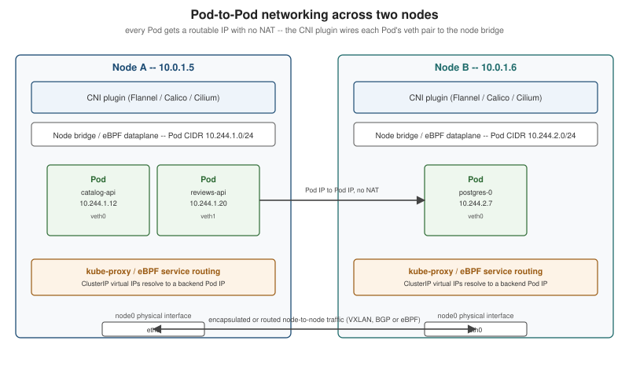

Cluster Networking, CNI and Service Mesh
|
This content was generated with the assistance of AI and should be verified against the official documentation before being relied on in production. |
Every page in this section so far has taken Pod-to-Pod and Pod-to-Service reachability for granted. This page is written against Kubernetes 1.37 and opens up what makes that reachability true: the network model every other networking page (Services, DNS and Service Discovery, Ingress, the Gateway API and Network Policies) is built on top of, the CNI plugin that implements it, and — as an optional layer above all of it — a service mesh.
The network model
Kubernetes defines a small set of rules that every network implementation must satisfy, and deliberately says nothing about how they are satisfied — that is left to a pluggable CNI plugin, below. The rules themselves are simple to state and easy to underestimate:
-
Every Pod gets its own routable IP address, from the cluster’s Pod network, and that address is unique cluster-wide — not just within a node.
-
Pods can reach every other Pod’s IP directly, with no NAT, regardless of which node either one runs on. A Pod on node A talks to a Pod on node B exactly as it would talk to a Pod on its own node: same IP, same port, no address translation in between.
-
Nodes can reach every Pod’s IP, again with no NAT, which is what lets the kubelet’s own health checks and
kubectl exec/logs/port-forwardwork uniformly regardless of where a Pod lands. -
A Pod sees its own IP the same way everything else sees it. A container never has to account for a NAT boundary between what it thinks its address is and what the rest of the cluster sees.
This is what Pods means when it says a Pod’s network namespace gives it "its own IP and route into the cluster network": that route is only usable at all because the underlying network satisfies these four rules. Contrast this with Docker’s default networking (see Docker Networking), where a container’s address is private to its host and reaching it from elsewhere requires NAT and published ports — Kubernetes networking exists specifically to remove that boundary at cluster scale, so that a Service (Services) can treat every backend Pod, on any node, as equally reachable.
Three address ranges
A cluster carves out three separate CIDR (Classless Inter-Domain Routing) ranges, each serving a different purpose, and confusing them is the most common source of "why can’t this reach that" debugging:
| CIDR | What lives there |
|---|---|
Node CIDR (cluster subnet) |
The actual machines' addresses — a node’s |
Pod CIDR |
The range Pod IPs are allocated from, set cluster-wide with |
Service CIDR |
A separate, virtual range (for example |
kubectl cluster-info dump and kubectl get nodes -o jsonpath='{.items[*].spec.podCIDR}' show the ranges a running
cluster actually uses. Getting these three ranges to not overlap each other, and to not overlap whatever network the
cluster’s own hosts sit on, is one of the few genuinely manual steps left in
Cluster Setup and Administration's kubeadm walkthrough.
Source: Kubernetes Docs — Cluster Networking.
CNI plugins
Kubernetes itself implements none of the rules above — it defines the Container Network Interface (CNI), a small
spec (a plugin binary, invoked by the kubelet with a JSON network configuration, that must attach or detach a
container’s network namespace) that any networking implementation can satisfy. kind installs a minimal one,
kindnet, automatically (see Introduction and
Architecture); a production cluster chooses one deliberately:
| Plugin | Approach | Dataplane |
|---|---|---|
Flannel |
The simplest option: a flat overlay network, most commonly VXLAN-encapsulating Pod traffic between nodes. No NetworkPolicy enforcement on its own (it is usually paired with Calico’s policy engine, "Canal", for that). |
iptables |
Calico |
Routes Pod traffic natively with BGP (no encapsulation, when the underlying network permits it) or falls back to
IP-in-IP/VXLAN where it does not. Enforces |
iptables or eBPF (selectable) |
Cilium |
Built around eBPF from the ground up rather than iptables rules: Pod routing, |
eBPF |
eBPF dataplanes in general (Cilium’s being the most widely deployed) replace both the CNI plugin’s own packet
forwarding and kube-proxy’s Service load balancing with programs that run inside the kernel, attached to network
hooks, instead of the traditional iptables/nftables rule chains kube-proxy programs (see
Services). The practical difference shows up at scale: an iptables chain that
must be walked linearly for every packet gets slower as the number of Services grows, while an eBPF hash-map lookup
does not. kube-proxy itself has no eBPF mode (its Linux modes are iptables, ipvs and nftables); "eBPF
Service load balancing" means disabling kube-proxy entirely (or not deploying it) and letting the CNI plugin’s own
eBPF programs take over its job — Cilium’s "kube-proxy replacement" is the most common example. Source:
Kubernetes Docs — Network
Plugins.
Only one CNI plugin runs per cluster (Calico’s "Canal" bundling is the one common exception, layering Flannel’s dataplane with Calico’s policy engine). Switching plugins on a live cluster is a disruptive, node-by-node operation, which is why it is worth deciding deliberately during cluster setup rather than after Pods are already scheduled.
Dual-stack clusters
A dual-stack cluster assigns every Pod and Service both an IPv4 and an IPv6 address, rather than one or the other.
Enabling it means the CNI plugin supports dual-stack (not every plugin’s every mode does — verify against the
chosen plugin’s own docs before relying on it) and giving kube-apiserver, kube-controller-manager and
kube-proxy two comma-separated CIDRs each, one per address family:
--service-cluster-ip-range=10.96.0.0/12,fd00:96::/112
--cluster-cidr=10.244.0.0/16,fd00:244::/56
--node-cidr-mask-size-ipv4=24
--node-cidr-mask-size-ipv6=64A dual-stack Service’s spec.ipFamilyPolicy controls what it actually gets:
ipFamilyPolicy |
Result |
|---|---|
|
One ClusterIP, in the cluster’s first configured family. |
|
Two ClusterIPs (one per family) on a dual-stack cluster; silently falls back to |
|
Two ClusterIPs, and the Service creation fails outright if the cluster is not dual-stack. |
spec.ipFamilies (an ordered list, e.g. ["IPv4", "IPv6"]) picks which family is primary when a Service has both — primarily relevant for .status.loadBalancer behaviour and for clients that only try the first address a DNS lookup
returns. Bookshelf's own manifests stay single-stack (IPv4) throughout this section for simplicity; a production
cluster that must support IPv6-only clients, or that is migrating off IPv4 address exhaustion, is the usual reason
to turn dual-stack on. Source:
Kubernetes Docs — IPv4/IPv6 dual-stack.
ClusterIP allocation
Every ClusterIP Service (see Services) needs a unique virtual IP from the
Service CIDR, and kube-apiserver is what hands one out — on Service creation, unless spec.clusterIP requests a
specific address, in which case the API server allocates that exact one or rejects the request if it is already
taken or outside the range. Two mechanisms exist:
-
The classic in-memory bitmap allocator, one per
kube-apiserverreplica, kept consistent only by all replicas agreeing on the same static Service CIDR. -
The newer, GA-since-1.33 allocator backed by
IPAddressandServiceCIDRAPI objects: each allocated ClusterIP becomes its own cluster-scopedIPAddressobject (kubectl get ipaddresseslists every one currently in use), and the Service CIDR itself becomes aServiceCIDRobject that can be resized, or a second one added, without restartingkube-apiserver— something the static--service-cluster-ip-rangeflag could never do while the cluster was live.kubectl get servicecidrsshows the ranges in effect and how many addresses each has allocated.
A lower band of the Service CIDR, sized min(max(16, size/16), 256) addresses (256 for a 10.96.0.0/12 range), is
kept for addresses an operator explicitly requests via spec.clusterIP — dynamic allocation uses the upper part of
the range first and only dips into the lower band once the rest is exhausted — so a handful of well-known Services
(a cluster’s own DNS Service is the canonical example) can keep a stable, human-chosen address across cluster
rebuilds, while the allocator hands out the rest dynamically. Source:
Kubernetes Docs — Service ClusterIP
allocation.

Service mesh
Everything above gets a packet from one Pod IP to another. A service mesh is an optional layer on top that observes and controls the traffic once it arrives, transparently to the application, by intercepting every in-cluster call rather than requiring the application to link a networking library:
| Capability | What the mesh adds |
|---|---|
mTLS (mutual TLS) |
Every Pod-to-Pod connection inside the mesh is automatically wrapped in mutual TLS — each side proves its identity with a short-lived certificate the mesh’s own certificate authority issues and rotates — with no change to application code. This turns "the cluster network is trusted" into "every call is authenticated and encrypted", which matters once Network Policies alone (IP- and port-based) stop being enough of a security boundary. |
Traffic management |
Fine-grained routing decisions the Gateway API’s own resources do not reach into the mesh for: weighted traffic splitting between two versions of the same Service for a canary (complementing the Gateway API's edge-facing canary, but applied to internal service-to-service calls), automatic retries and per-call timeouts, and circuit breaking that stops sending traffic to a backend that is failing before its readiness probe would notice. |
Observability |
Uniform, per-request metrics, distributed traces and access logs for every service-to-service call, collected by the mesh itself rather than instrumented individually into each Bookshelf service. |
Sidecar vs ambient
Two architectures deliver these capabilities, and they trade off differently:
| Model | How it intercepts traffic |
|---|---|
Sidecar |
A proxy container (Envoy, in Istio’s case) is injected into every mesh-enrolled Pod as a native sidecar (see Pods), and every inbound/outbound packet is transparently redirected through it. Mature and the most feature-complete option, at the cost of one extra container — and its own CPU and memory footprint — per Pod, multiplied across every replica. |
Ambient |
Mesh functionality moves out of the Pod entirely: a per-node |
Istio (the most widely adopted mesh) supports both models side by side — a namespace can run sidecar mode, ambient mode, or opt out of the mesh entirely, migrated one namespace at a time. Linkerd, by contrast, is sidecar-only by design, choosing a much smaller, purpose-built proxy (written in Rust) over Envoy’s larger feature surface in exchange for a lighter footprint per sidecar. Neither model is specific to any one CNI plugin; a mesh runs on top of whichever CNI plugin the cluster already uses. Source: Istio Docs — Security and Istio Docs — Architecture.
Where a service mesh fits next to Network Policies and the Gateway API
A service mesh is not a replacement for Network Policies (which
control whether a connection is allowed to happen at all, at L3/L4) or the
Gateway API (which routes traffic into the cluster from outside). The three compose: a NetworkPolicy still
decides which Pods may even attempt to connect, a Gateway still terminates external traffic at the cluster edge, and
the mesh adds authenticated encryption and fine-grained control to whatever traffic those two already allow through — most clusters running a mesh keep all three layers active rather than treating the mesh as a substitute for
either. On AKS, the managed Istio-based service mesh add-on (see
Deploying Microservices to AKS's "Service-to-service traffic and the Istio
service mesh add-on" section) runs Istio’s control plane and sidecar injection as a supported cluster feature,
without operating Istio’s upgrade cadence by hand.
For Bookshelf, adopting a mesh is worth the operational cost only once catalog-api, reviews-api and web grow
past the two or three services this section models — for the scenario as written, plain NetworkPolicy plus
Gateway API TLS termination covers the same "who can reach whom, encrypted" ground with far less to run. Source:
Linkerd Docs — Architecture.